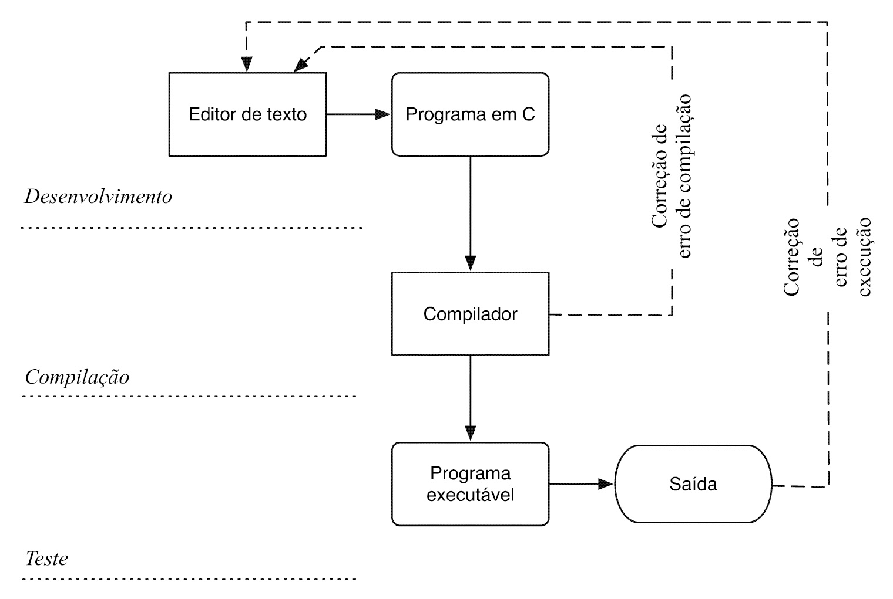
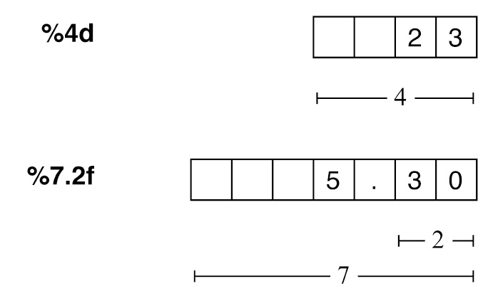

Primeiros programas em C
Estas são as notas da primeira aula: como um programa em C nasce e roda, os tipos de dado e operadores que ele manipula, como ele conversa com quem o usa, e como ele toma decisões. Os exemplos interativos logo abaixo colocam parte dessa teoria em prática, passo a passo.
Introdução à programação em C
Ciclo de desenvolvimento
Escrever um programa em C passa por três fases, que se repetem em ciclo até o programa funcionar corretamente: primeiro o código é digitado num editor de texto; depois o compilador traduz esse código-fonte para um programa executável, apontando um erro de compilação sempre que a sintaxe está incorreta; por fim o programa executável roda e sua saída é conferida contra o resultado esperado — um erro de execução (o programa compila e roda, mas produz um resultado errado) manda o programador de volta ao editor para revisar a lógica, assim como um erro de compilação manda de volta para corrigir a sintaxe.

Nos bastidores, a compilação em si tem sub-etapas: o pré-processamento resolve diretivas como
#include e #define; a compilação propriamente dita traduz o código-fonte para
código objeto; e a linkagem junta esse código objeto com as bibliotecas usadas (como a
stdio), produzindo o executável final. Compilar com
gcc --save-temps (veja o desafio prático deste módulo) deixa os arquivos intermediários de
cada etapa visíveis no diretório.
Programando em C: estrutura básica de um programa
Todo programa em C segue o mesmo esqueleto, visível no exemplo Primeiro programa: a diretiva
#include traz as declarações de uma biblioteca (aqui, stdio.h, para entrada e
saída); a função main() é o ponto de entrada obrigatório — é dela que a execução começa; o
corpo de main() é delimitado por chaves { } e contém uma sequência de
declarações e comandos executados em ordem, de cima para baixo; e o comando return encerra
a função, devolvendo um código de status ao sistema operacional (0 indica sucesso).
Comentários (/* ... */, ou // até o fim da linha) documentam o código sem
afetar a compilação — o compilador simplesmente os ignora.
Variáveis e operadores
Variáveis
Uma variável é um espaço nomeado na memória que guarda um valor de um tipo específico — e que pode mudar ao longo da execução do programa.
Tipos básicos
O C define cinco tipos de dado primitivos — char, int, float,
double e void —, cada um ocupando um número fixo de bytes na memória (que
pode variar entre plataformas). char guarda um caractere (ou um pequeno inteiro),
int um número inteiro, float e double números de ponto
flutuante (double com mais precisão), e void representa "nenhum tipo" — usado,
por exemplo, para indicar que uma função não retorna valor. Os modificadores signed,
unsigned, short e long ajustam a faixa de valores representável
por um tipo — um unsigned int, por exemplo, abre mão de representar negativos para dobrar
o maior valor positivo possível.
Declaração de variáveis
Toda variável precisa ser declarada antes de usada — a forma geral é tipo nome;, como em
int age; no exemplo Primeiro programa. É possível declarar várias variáveis do
mesmo tipo numa linha só, separadas por vírgula (float base, altura;), e também
inicializar no mesmo passo da declaração (int contador = 0;).
Valores constantes
Constantes são valores fixos escritos diretamente no código — 42 e -7 são
constantes inteiras, 3.14 uma constante de ponto flutuante, 'a' uma constante
de caractere (entre aspas simples) e "Ola" uma constante string (entre aspas duplas, e
sempre um vetor de caracteres terminado em '\0'). O C também aceita constantes
hexadecimais, prefixadas por 0x (0x1F), e octais, prefixadas por um zero
(013).
Variáveis com valores indefinidos
Ao contrário do que se poderia esperar, o C não inicializa automaticamente uma variável recém-declarada
com zero: seu valor inicial é indefinido — o que estiver, por acaso, naquele endereço de memória. É o
caso de age no exemplo Primeiro programa entre a declaração
(int age;) e a leitura pelo scanf: usar seu valor nesse intervalo leria "lixo
de memória". Por isso a boa prática é nunca presumir um valor inicial e sempre inicializar
explicitamente uma variável antes de lê-la.
Operadores
Operadores combinam e transformam os valores guardados nas variáveis.
Operadores aritméticos
Os operadores +, -, *, / e % realizam
as operações aritméticas básicas — soma, subtração, multiplicação, divisão e resto da divisão inteira,
respectivamente. O exemplo Fahrenheit para Celsius usa vários deles na mesma expressão:
celsius = (fahrenheit - 32) * 5 / 9;. Um detalhe importante: quando os dois operandos de
/ são inteiros, o resultado é uma divisão inteira, truncada (7 / 2 vale
3, não 3.5) — para obter o resultado real, pelo menos um dos operandos precisa
ser de ponto flutuante.
Operadores de atribuição
O operador = atribui o valor da direita à variável da esquerda (x = 5;). O C
também tem operadores de atribuição compostos, que combinam uma operação com a atribuição numa forma
mais curta — x += 3; equivale a x = x + 3;, e o mesmo padrão vale para
-=, *=, /= e %=.
Operadores de incremento e decremento
++ e -- incrementam ou decrementam uma variável em 1, e podem ser usados antes
(pré-fixado, ++x) ou depois (pós-fixado, x++) da variável — a diferença
aparece quando o operador é usado dentro de uma expressão maior: no pré-fixado, a variável é
incrementada primeiro, e o novo valor é o que entra na expressão; no pós-fixado, o valor atual entra na
expressão, e só depois a variável é incrementada.
Operadores relacionais e lógicos
Os operadores relacionais (>, >=, <, <=,
==, !=) comparam dois valores e retornam verdadeiro (1) ou falso
(0) — é assim que o exemplo Fahrenheit para Celsius decide se
celsius < 0. Os operadores lógicos combinam expressões booleanas:
&& (E) só é verdadeiro se ambos os lados forem verdadeiros, || (OU) é
verdadeiro se pelo menos um lado for, e ! (NÃO) inverte um valor lógico.
Operador sizeof
sizeof consulta, em tempo de compilação, quantos bytes um tipo ou uma variável ocupa na
memória — é exatamente o que o exemplo Tipos de dados usa para revelar o tamanho de cada tipo
primitivo (sizeof(int), sizeof(double) etc.) na plataforma em que o programa
está rodando.
Conversão de tipo
Quando uma expressão mistura tipos diferentes, o C converte automaticamente os valores para um tipo
comum antes de operar (conversão implícita) — é por isso que, no exemplo Calculadora, ler os
operandos como double garante uma divisão com casas decimais, mesmo que o usuário digite
números inteiros. Também é possível forçar uma conversão explicitamente com um modelador
(cast): (float)a / b converte a para float antes da
divisão, garantindo um resultado com casas decimais mesmo que a e b sejam
int.
Entrada e saída básicas
Para interagir com quem usa o programa, o C conta com duas funções da biblioteca padrão declaradas em
stdio.h.
Função printf
printf formata e imprime valores na tela, usando especificadores de formato que indicam o
tipo e a formatação de cada valor — %d para inteiros, %f para ponto
flutuante, %c para caracteres, %s para strings. É possível controlar a
largura mínima do campo e, para pontos flutuantes, o número de casas decimais, como em
%7.2f.

%4d e %7.2f: a largura de campo reserva um número mínimo de posições, alinhando o valor à direita e completando com espaços à esquerda.Função scanf
scanf lê a entrada digitada pelo usuário e guarda o valor lido dentro de uma variável —
mas, diferente de printf, scanf sempre precisa do endereço da
variável, não do seu valor, por isso é quase sempre chamado com o operador & antes do
nome da variável (scanf("%d", &idade);). Um cuidado comum ao misturar leituras: o
exemplo Calculadora lê o operador com scanf(" %c", &operator) — o espaço antes
de %c descarta qualquer espaço em branco ou quebra de linha deixada no buffer pela leitura
anterior.
Condicionais
Comando if
O comando if executa um bloco de comandos só quando uma condição é verdadeira, e o
else, opcional, executa um bloco alternativo quando ela é falsa — é assim que o exemplo
Fahrenheit para Celsius decide entre "congelando" e "não congelando".
Expressões booleanas
O C não tem um tipo booleano dedicado: qualquer expressão numérica pode ser usada como condição — zero
é considerado falso, e qualquer valor diferente de zero é considerado verdadeiro. É por isso que
if (x) e if (x != 0) são equivalentes, assim como if (!x) e
if (x == 0).
Blocos de comandos
Quando um if precisa executar mais de um comando, os comandos são agrupados entre chaves
{ }, formando um bloco. Se o corpo do if tiver um único comando, as chaves
são opcionais — mas usá-las mesmo assim é uma prática recomendada, porque evita um erro comum:
adicionar uma segunda linha ao "corpo" do if sem perceber que, sem chaves, ela na verdade
já está fora dele.
Operador condicional
O operador ternário ?: é uma forma compacta de escrever um if-else que só
decide qual de dois valores usar: condição ? valor_se_verdadeiro : valor_se_falso. Por
exemplo, int maior = (a > b) ? a : b; guarda em maior o maior valor entre
a e b, substituindo um if-else de quatro linhas por uma única
expressão.
Seleção
O comando switch testa uma única variável (ou expressão) contra uma lista de valores
constantes, executando o case correspondente — uma alternativa mais legível a uma longa
cadeia de if-else-if quando há muitos valores possíveis para testar, como faz o exemplo
Calculadora ao escolher a operação aritmética a partir do caractere digitado. Cada
case termina, tipicamente, com um break, que interrompe o switch;
sem ele, a execução "cai" para o case seguinte (fall-through) mesmo que sua
condição não bata — um comportamento às vezes proposital, mas fonte comum de bugs quando esquecido. A
cláusula default, opcional, é executada quando nenhum case corresponde ao
valor testado.
Escolha um exemplo abaixo: para cada um você vê o código-fonte, uma explicação da mecânica central e a simulação da execução passo a passo — sem precisar compilar nada.
Exemplos
-
Primeiro programa
Um primeiro exemplo de programa em C: leitura de um inteiro e impressão formatada com printf.
-
Tipos de dados
O operador sizeof revela quantos bytes cada tipo primitivo ocupa na memória.
-
Fahrenheit para Celsius
Conversão de temperatura com operadores aritméticos e uma decisão simples (if/else).
-
Calculadora
Uma calculadora de dois operandos que usa switch para escolher a operação.
Primeiro programa
ver no GitHub ↗#include <stdio.h>
int main()
{
/* First C program */
/* Declarations: All variables used need to be declared */
int age;
/* Start of the program */
printf("How old are you?: ");
scanf("%d", &age);
printf("%d? Wow, you look like you're only %d years old!\n", age, age * 2);
/* End of the program */
return 0;
}Como funciona o programa
Toda a execução começa em main(). A linha int age; apenas
declara a variável — reserva espaço na memória para um inteiro, mas
ainda sem valor. O programa lê um número com scanf, guarda em
age e depois usa esse valor duas vezes no mesmo printf: uma
vez sozinho, outra multiplicado por 2.
Execução passo a passo — age = 20
Clique em “Próximo” para começar a simulação.
Saída no terminal
How old are you?: 20
20? Wow, you look like you're only 40 years old!
int age;) e atribuir um valor (via scanf) são passos
diferentes: logo após a declaração, age não tem nenhum valor definido — por
isso o chip da variável mostra “—” até o scanf ser executado.
Tipos de dados
ver no GitHub ↗#include <stdio.h>
int main() {
printf("Size of char: %lu bytes\n", sizeof(char));
printf("Size of int: %lu bytes\n", sizeof(int));
printf("Size of float: %lu bytes\n", sizeof(float));
printf("Size of double: %lu bytes\n", sizeof(double));
printf("Size of long: %lu bytes\n", sizeof(long));
printf("Size of long long: %lu bytes\n", sizeof(long long));
printf("Size of short: %lu bytes\n", sizeof(short));
printf("Size of unsigned int: %lu bytes\n", sizeof(unsigned int));
printf("Size of unsigned char: %lu bytes\n", sizeof(unsigned char));
printf("Size of unsigned long: %lu bytes\n", sizeof(unsigned long));
printf("Size of unsigned long long: %lu bytes\n", sizeof(unsigned long long));
printf("Size of signed char: %lu bytes\n", sizeof(signed char));
printf("Size of signed int: %lu bytes\n", sizeof(signed int));
printf("Size of signed long: %lu bytes\n", sizeof(signed long));
printf("Size of signed long long: %lu bytes\n", sizeof(signed long long));
printf("Size of unsigned short: %lu bytes\n", sizeof(unsigned short));
printf("Size of signed short: %lu bytes\n", sizeof(signed short));
return 0;
}Como funciona o operador sizeof
sizeof(tipo) é avaliado em tempo de compilação e devolve, em bytes, o
tamanho que aquele tipo ocupa na memória — um unsigned long, por isso o
formato %lu. Esses tamanhos não são fixos pela linguagem (exceto
char, que vale sempre 1): dependem do compilador e da plataforma. Os
valores abaixo foram obtidos compilando este código com gcc em Linux
64 bits.
Execução passo a passo
Clique em “Próximo” para começar a simulação.
| Tipo | Expressão | Tamanho |
|---|
Saída no terminal
Size of char: 1 bytes Size of int: 4 bytes Size of float: 4 bytes Size of double: 8 bytes Size of long: 8 bytes Size of long long: 8 bytes Size of short: 2 bytes Size of unsigned int: 4 bytes Size of unsigned char: 1 bytes Size of unsigned long: 8 bytes Size of unsigned long long: 8 bytes Size of signed char: 1 bytes Size of signed int: 4 bytes Size of signed long: 8 bytes Size of signed long long: 8 bytes Size of unsigned short: 2 bytes Size of signed short: 2 bytes
signed não é sempre redundante: para int, long
etc. o sinal padrão já é "com sinal", então signed int e int
dão o mesmo tamanho e comportamento. Mas para char a linguagem C
não define se o padrão é com ou sem sinal — isso fica a critério do
compilador/plataforma. Por isso signed char existe: garante o
comportamento mesmo em compiladores onde char puro seria
unsigned.
Fahrenheit para Celsius
ver no GitHub ↗#include <stdio.h>
int main()
{
float fahrenheit, celsius;
// Input temperature in Fahrenheit
printf("Enter temperature in Fahrenheit: ");
scanf("%f", &fahrenheit);
// Convert Fahrenheit to Celsius
celsius = (fahrenheit - 32) * 5 / 9;
// Output temperature in Celsius
printf("Temperature in Celsius: %.2f\n", celsius);
// Check if temperature is below freezing
if (celsius < 0)
printf("It's freezing outside!\n");
else
printf("It's not freezing outside.\n");
return 0;
}Como funciona a conversão
A fórmula (fahrenheit - 32) * 5 / 9 aplica a conversão padrão de
Fahrenheit para Celsius. Depois de calcular celsius, um único
if/else decide qual mensagem imprimir, comparando
celsius com 0 — o ponto de congelamento da água.
Execução passo a passo — fahrenheit = 14
Clique em “Próximo” para começar a simulação.
Saída no terminal
Enter temperature in Fahrenheit: 14
Temperature in Celsius: -10.00
It's freezing outside!
5 / 9. Se o código fosse escrito
como (fahrenheit - 32) * (5 / 9), o resultado seria sempre 0: como
5 e 9 são inteiros, 5 / 9 seria uma divisão
inteira que trunca para 0 antes de multiplicar por fahrenheit - 32.
Sem os parênteses extras, * 5 primeiro promove a conta para
float (porque fahrenheit - 32 já é float), e só
depois a divisão por 9 acontece em ponto flutuante.
Calculadora
ver no GitHub ↗#include <stdio.h>
int main()
{
double num1, num2, result;
char operator;
printf("Enter first number: ");
scanf("%lf", &num1);
printf("Enter operator (+, -, *, /): ");
scanf(" %c", &operator); // Notice the space before %c to consume the newline character.
printf("Enter second number: ");
scanf("%lf", &num2);
switch (operator)
{
case '+':
result = num1 + num2;
break;
case '-':
result = num1 - num2;
break;
case '*':
result = num1 * num2;
break;
case '/':
if (num2 != 0)
result = num1 / num2;
else
{
printf("Error: Division by zero\n");
return 1; // Exit with an error code
}
break;
default:
printf("Error: Invalid operator\n");
return 1; // Exit with an error code
}
printf("Result: %lf\n", result);
return 0; // Exit successfully
}Como funciona o switch
switch (operator) compara operator com cada case
até encontrar um que bata; a partir daí executa até achar um break. Sem o
break, a execução "cairia" para o próximo case (fall-through)
— por isso todo case aqui termina com break, exceto os que já
terminam com return.
Execução passo a passo — 10 / 4
Clique em “Próximo” para começar a simulação.
Saída no terminal
Enter first number: 10 Enter operator (+, -, *, /): / Enter second number: 4 Result: 2.500000
%c em scanf(" %c", &operator) não é
decoração — o comentário do próprio código já avisa: sem ele, scanf leria
o caractere de nova linha (\n) deixado no buffer pelo scanf("%lf",
...) anterior, em vez do operador digitado. É uma pegadinha clássica de misturar
%c com outros formatos de scanf.